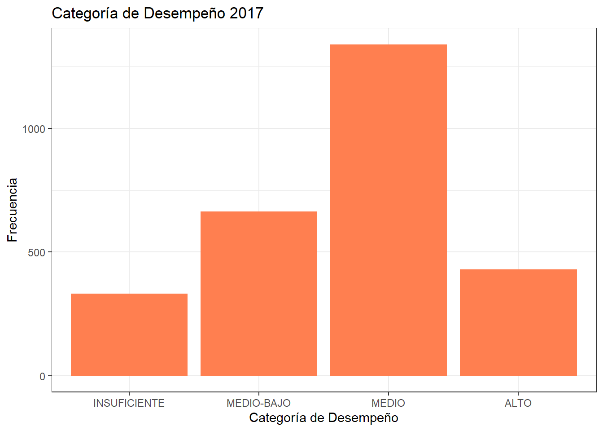
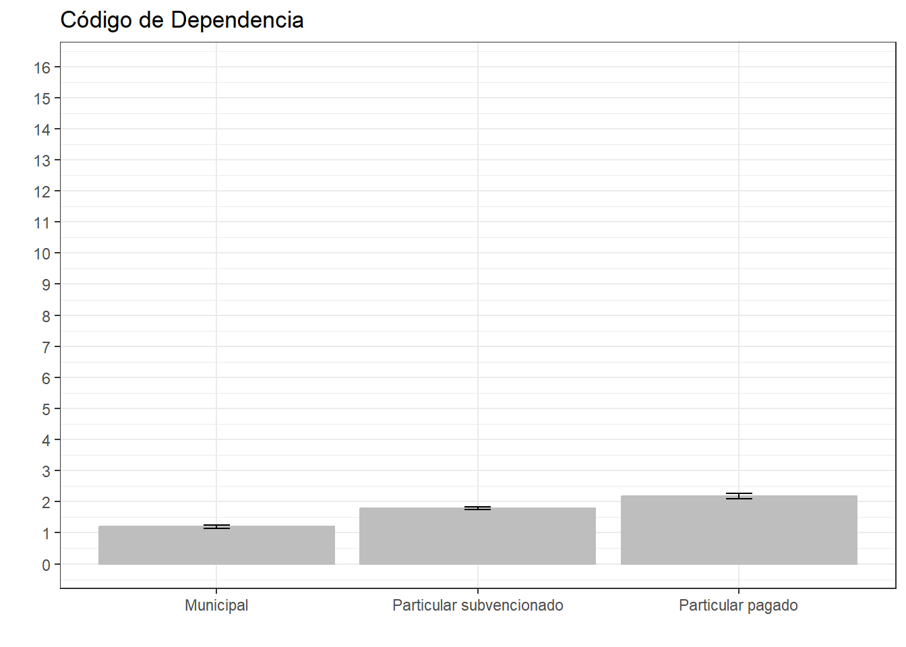

Mercantilización del sistema educativo y segregación escolar en Chile
Por: Ignacia Castillo Soto
Este exámen consiste en integrar las cuatro fases anteriores del proyecto en un sólo documento aplicando los conocimientos y herramientas que aprendimos a lo largo del semestre
Reporte en Quarto (Trabajo 01)
Introducción
La mercantilización del sistema educativo en Chile se sitúa en el contexto de la década de los 80 en el país, marcado por la dictadura militar y la imposición del modelo neoliberal como experimento en Latinoamérica siendo nuestro país el primero en implementarlo, esta expansión mercantil hacia los ámbitos cotidianos de la vida desmanteló lo que se conocía como el Estado benefactor incentivando la competencia individual (ver Juan Eduardo García-Huidobro, Juan Eduardo García-Huidobro, and García-Huidobro 2007, 70–71). En cuanto al ámbito escolar,
“se realizaron cuatro grandes transformaciones consideradas los pilares del actual modelo, 1) redefinición del marco regulatorio educativo, del rol del Estado y de la prelación de derechos educativos a través de una nueva Constitución; 2) instalación de un modelo de gestión del sistema educativo formal que introduce un nuevo y central actor, los sostenedores (municipios y agentes privados); 3) implementación de los establecimientos educacionales, a través de una particular versión de vouchers o subsidios portables a los alumnos; 4) reestructuración y privatización del sistema de educación superior. Todas estas transformaciones terminan por institucionalizarse a través de la Ley Orgánica Constitucional de Educación, dictada el 10 de marzo de 1990, un día antes que Pinochet entregara el poder.”(Budnik et al. 2011, 307–8).
A pesar de que han existido reformas, no han sido sustancialmente radicales para generar cambios en las políticas anteriormente mencionadas y si bien han existido, (Budnik et al. 2011) considera que han seguido desmontando el sistema de educación pública sujetando la educación a intereses comerciales, pasando de ser una garantía estatal a una mercancía, marcada por ideologías que sobrevaloran los mecanismos del mercado en la mejora de la enseñanza y aprendizaje, lo cual ha tenido como resultado una privatización extrema del sistema educativo con implicaciones significativas en términos de segregación y desigualdad. Lo mencionado anteriormente es un punto reflexivo importante para esta investigación, sirviendo de antecedente para poder hablar de la segregación escolar en el país.
La segregación implica la manera en que los diferentes grupos sociales están distribuidos, ya sea en distintas unidades organizativas, en diferentes áreas geográficas, o en una combinación de ambas. Esta distribución desigual afecta las posibilidades de interacción entre los miembros de estos grupos, sin embargo la segregación escolar según (Sandra Carrillo et al. 2020), es
“entendida como a la distribución desigual de los estudiantes en las escuelas, en función de sus características personales, culturales o sociales –especialmente en términos de su etnia y origen social, se estudia según tres tipos de segregación: la relacionada al nivel socioeconómico, la étnico-cultural y la académica.” (p. 353). Según las fuentes revisadas, la noción de grupos “segregados” implica que ciertos grupos tienen ventajas educativas relativas sobre otros. Esta idea sugiere que la concentración de ciertos grupos socioeconómicos o académicos en determinadas escuelas puede influir en los logros educativos de los estudiantes. Sandra Carrillo et al. (2020).
“actualmente dos mecanismos de política pública son relevantes para hablar sobre segregación educativa. El primero tiene que ver con las facultades que poseen los establecimientos para seleccionar estudiantes, que redundan en que la conformación de estos establecimientos tienda a ser homogénea según criterios socioeconómicos o de género. Un segundo aspecto es la “libertad de elección de los padres”, que implica que, al momento de escoger un establecimiento, los padres ponen en práctica ciertos patrones socioculturales que a fin de cuentas actúan como mecanismos de autoselección.” (p. 56).
En Chile, se le da a los padres una gran libertad para elegir la escuela de sus hijos, más que en la mayoría de los países de la OCDE. En teoría, los padres tienen la libertad de elegir la escuela que deseen para sus hijos, sin restricciones geográficas u otras. Sin embargo, en la práctica, se permite que las escuelas utilicen una variedad de criterios de selección que a veces limitan esa libertad, sin pueden obviar las condiciones socioeconómicas que se requieren para poder elegir, según evidencian estudios como los de Carrasco, et. Al; y Godoy, Salazar y Treviño, en 2014. (ver Ministerio de Educación and de Educación 2017, 66). “El hecho de que la distribución de los alumnos entre las diferentes escuelas no se produzca en forma aleatoria dirige la atención hacia la identificación de las causas que explican la ocurrencia de la segregación escolar.” (Bellei C 2013, 330).
En la región latinoamericana, específicamente en el cono sur, se encuentra que aproximadamente el 80% de los estudios relacionados con la segregación escolar se vinculan con la segregación por NSE/ GSE, los cuales Chile destaca por contar con el mayor tipo de publicaciones al respecto utilizando métodos cuantitativos con bases de datos de las evaluaciones estandarizadas.
Chile es un país con altos niveles de desigualdad en cuanto a distribución de ingresos, y el sistema educativo permite que estas se reproduzcan, ya que las diferencias en el nivel de ingresos de las familias se traducen en diferencias en los tipos de establecimientos educativos a los que acceden los estudiantes, lo cual según investigadores provoca una amplia desigualdad de aprendizaje.(Ministerio de Educación and de Educación 2017).
Para esta investigación, la evidencia bibliográfica sugiere que en Chile las brechas educativas han ido en aumento gracias a que el sistema educacional está diseñado para funcionar mediante la lógica de competencia y libre mercado, replicando las desigualdades preexistentes en país (ver F. Javier Murillo et al. 2016), así que decidimos nos centrarnos en cómo las prácticas de privatización de la educación han fomentado la segregación escolar en el país, enfocándonos en el análisis de los resultados en la prueba SIMCE del año 2017 en 2° medio, filtrando por GSE, clasificación del desempeño y tipo de dependencia del establecimiento, buscando análizar cómo estas variables pueden afectar a los resultados en una prueba estandarizada.
Procesamiento y visualización de análisis descriptivo (Trabajo 02)
Introducción
Para esta segunda entrega decidí utilizar la base de datos del SIMCE 20171 correspondiente a los cursos de 2° medio a nivel país, ya que me parece que trabajar con adolescentes que están en su última etapa de formación académica es un buen grupo para analizar las variables y porque han estado la mayoría de su vida escolar expuestos al sistema educativo y se puede ver como afecta a los resultados dentro de distintos establecimientos, lamentablemente la página que pública los resultados y bases de datos, no incluye bases con promedios de puntajes por establecimiento por lo que no se puede acceder a variables más específicas que la categoría de desempeño por establecimiento para hacer un análisis más específico.
Dentro de los antecedentes de la bb.dd. Simce es parte de las evaluaciones que se aplican en Chile, definidas en el Plan de Evaluaciones Nacionales e Internacionales, y corresponde a una medición estandarizada anual a todas y todos los estudiantes del país que cursan los niveles evaluados. Su objetivo es conocer los resultados educativos de los establecimientos, evaluando el logro de los contenidos y habilidades del Currículum Nacional, con pruebas en diferentes asignaturas o áreas de aprendizaje; y recogiendo información sobre el contexto educativo a través de cuestionarios que responden directores(as), docentes, estudiantes, padres, madres y apoderados, de modo de analizar los resultados en forma integral. https://www.agenciaeducacion.cl/simce/
Las variables que seleccioné para este trabajo son de tipo categóricas, y pertenecen a los establecimientos evaluados el año 2017
VARIABLE 2: “cod_grupo” = Código de grupo socioeconómico (Bajo(1);Medio bajo(2);Medio(3);Medio alto(4);Alto(5))
VARIABLE 3: “cdm_2017” = Categoría de Desempeño 2017 (INSUFICIENTE(1), MEDIO-BAJO(2), MEDIO(3) Y ALTO(4))2
Los establecimientos que tengan valores del Índice Final hasta el valor del percentil 12 (inclusive) de la distribución de este índice se clasificarán en la categoría Desempeño Insuficiente.
Los establecimientos que presenten valores del Índice Final por sobre el valor del percentil 12 y hasta el percentil 35 (inclusive) se clasificarán en la categoría Desempeño Medio-Bajo.
Los establecimientos que se sitúen por sobre el valor del percentil 35 y hasta el percentil 85 (inclusive) de la distribución del índice Final se clasificarán en la categoría Desempeño Medio.
Los establecimientos con valores del Índice Final superiores al valor del percentil 85 de la distribución de este índice se clasificarán en la categoría Desempeño Alto.
1. Cargar base de datos
#Librerías a utilizarpacman::p_load(dplyr, sjmisc, car, sjlabelled, stargazer, haven, kableExtra, sjPlot, summarytools, ggplot2)#Carga de la base de datosrm(list=ls()) options(scipen=999) library(readxl)cdm_2017 <-read_excel("C:/Users/nachi/OneDrive/Documentos/Universidad/UAH 5° Semestre/OFC R para análisis estadístico/Trabajos/input/data-orig/cdm_2017.xlsx")idps2m2017_rbd <-read_excel("C:/Users/nachi/OneDrive/Documentos/Universidad/UAH 5° Semestre/OFC R para análisis estadístico/Trabajos/input/data-orig/idps2m2017_rbd.xlsx")simce2m2017_rbd <-read_excel("C:/Users/nachi/OneDrive/Documentos/Universidad/UAH 5° Semestre/OFC R para análisis estadístico/Trabajos/input/data-orig/simce2m2017_rbd.xlsx")dim(cdm_2017)
#Selección de Variables a utilizar#De la base "cdm_2017"# "rbd" = Rol base de datos del establecimiento# "cdm_2017" = Categoría de Desempeño 2017 (INSUFICIENTE, MEDIO-BAJO, MEDIO Y ALTO)find_var(data = cdm_2017, "rbd")
View(cdm_2017)save(proc_cdm_2017,file ="C:/Users/nachi/OneDrive/Documentos/Universidad/UAH 5° Semestre/OFC R para análisis estadístico/Trabajos/input/data-proc/proc_cdm_2017.RData")#De la base "idps2m2017_rbd"# "rbd" = Rol base de datos del establecimiento# "cod_depe2" = Código de dependencia 3 categorías (Municipal(1); Particular subvencionado(2); Particular pagado(3))find_var(data = idps2m2017_rbd, "rbd")
View(proc_idps2m2017_rbd)save(proc_idps2m2017_rbd,file ="C:/Users/nachi/OneDrive/Documentos/Universidad/UAH 5° Semestre/OFC R para análisis estadístico/Trabajos/input/data-proc/proc_idps2m2017_rbd.RData")#De la base "simce2m2017_rbd"# "rbd" = Rol base de datos del establecimiento# "cod_grupo" = Código de grupo socioeconómico (Bajo(1);Medio bajo(2);Medio(3);Medio alto(4);Alto(5))find_var(data = simce2m2017_rbd, "rbd")
View(proc_simce2m2017_rbd)save(proc_simce2m2017_rbd,file ="C:/Users/nachi/OneDrive/Documentos/Universidad/UAH 5° Semestre/OFC R para análisis estadístico/Trabajos/input/data-proc/proc_simce2m2017_rbd.RData")#Nueva base procesada#Unir por "rbd"data <-merge(proc_cdm_2017,proc_idps2m2017_rbd, by="rbd")simce2m2017_total <-merge (data, proc_simce2m2017_rbd, by="rbd")names(simce2m2017_total)
View(simce2m2017_total)save(simce2m2017_total,file ="C:/Users/nachi/OneDrive/Documentos/Universidad/UAH 5° Semestre/OFC R para análisis estadístico/Trabajos/input/data-proc/simce2m2017_total.RData")load("~/Universidad/UAH 5° Semestre/OFC R para análisis estadístico/Trabajos/input/data-proc/simce2m2017_total.RData")View(simce2m2017_total)
3. Operacionalización de variables
#Procesamiento de Variables#VARIABLE 1:"cod_depe2" = Código de dependencia 3 categorías (Municipal(1); Particular subvencionado(2); Particular pagado(3))#a. Descriptivofrq(simce2m2017_total$cod_depe2)
x <character>
# total N=2876 valid N=2876 mean=2.30 sd=0.88
Value | N | Raw % | Valid % | Cum. %
----------------------------------------------------------
Municipal | 805 | 27.99 | 27.99 | 27.99
Particular pagado | 395 | 13.73 | 13.73 | 41.72
Particular subvencionado | 1676 | 58.28 | 58.28 | 100.00
<NA> | 0 | 0.00 | <NA> | <NA>
table(simce2m2017_total$cod_depe2)
Municipal Particular pagado Particular subvencionado
805 395 1676
Municipal Particular subvencionado Particular pagado
805 1676 395
table(simce2m2017_total$cod_grupo)
Bajo Medio bajo Medio Medio alto Alto
628 816 674 368 390
table(simce2m2017_total$cdm_2017)
INSUFICIENTE MEDIO-BAJO MEDIO ALTO
332 664 1340 429
#Generación de base de datos procesada con NA corregidossimce2m2017_total$cod_depe2 <-as.factor(simce2m2017_total$cod_depe2)simce2m2017_total$cod_grupo <-as.factor(simce2m2017_total$cod_grupo)simce2m2017_total$cdm_2017 <-as.factor(simce2m2017_total$cdm_2017)frq(simce2m2017_total)
, , cod_grupo = Bajo
cod_depe2
cdm_2017 Municipal Particular subvencionado Particular pagado
INSUFICIENTE 93 35 0
MEDIO-BAJO 175 76 0
MEDIO 107 95 0
ALTO 2 6 0
, , cod_grupo = Medio bajo
cod_depe2
cdm_2017 Municipal Particular subvencionado Particular pagado
INSUFICIENTE 82 53 0
MEDIO-BAJO 95 157 0
MEDIO 90 258 0
ALTO 17 42 0
, , cod_grupo = Medio
cod_depe2
cdm_2017 Municipal Particular subvencionado Particular pagado
INSUFICIENTE 12 24 1
MEDIO-BAJO 15 94 0
MEDIO 34 348 0
ALTO 26 103 0
, , cod_grupo = Medio alto
cod_depe2
cdm_2017 Municipal Particular subvencionado Particular pagado
INSUFICIENTE 0 8 1
MEDIO-BAJO 1 27 3
MEDIO 5 207 15
ALTO 6 83 3
, , cod_grupo = Alto
cod_depe2
cdm_2017 Municipal Particular subvencionado Particular pagado
INSUFICIENTE 0 0 23
MEDIO-BAJO 0 1 20
MEDIO 0 14 167
ALTO 0 7 134
save(simce2m2017_total,file ="C:/Users/nachi/OneDrive/Documentos/Universidad/UAH 5° Semestre/OFC R para análisis estadístico/Trabajos/input/data-proc/simce2m2017_total.RData")#Guardar y respaldar base simce2m2017_total > simce2m2017_finalsimce2m2017_final <- simce2m2017_totalsave(simce2m2017_final,file ="C:/Users/nachi/OneDrive/Documentos/Universidad/UAH 5° Semestre/OFC R para análisis estadístico/Trabajos/input/data-proc/simce2m2017_final.RData")load("~/Universidad/UAH 5° Semestre/OFC R para análisis estadístico/Trabajos/input/data-proc/simce2m2017_final.RData")View(simce2m2017_final)dim(simce2m2017_final)
#Etiquetado Finalsimce2m2017_final <-sjlabelled::copy_labels(simce2m2017_final,simce2m2017_total)View(simce2m2017_final)simce2m2017_final <- simce2m2017_finalsave(simce2m2017_final,file ="C:/Users/nachi/OneDrive/Documentos/Universidad/UAH 5° Semestre/OFC R para análisis estadístico/Trabajos/input/data-proc/simce2m2017_final.RData")load("~/Universidad/UAH 5° Semestre/OFC R para análisis estadístico/Trabajos/input/data-proc/simce2m2017_final.RData")View(simce2m2017_final)dim(simce2m2017_final)
Generated by summarytools 1.0.1 (R version 4.3.3) 2024-06-30
Como podemos ver en la ?@tbl-summarytools en la Categoría de Desempeño Académico (cdm_2017), la mayoría de los establecimientos tienen un desempeño académico medio (48.5%), seguido por un desempeño medio-bajo (24.0%), mientras que una menor concentración de establecimientos se encuentra en los extremos de los percentiles de desempeño ( un 15.5% y 12.0%). En cuanto al Código de Dependencia del Establecimiento (cod_depe2), una gran mayoría (1676 de 2876) son establecimientos subvencionados y solo un 13.7% son particulares pagados, mientras que los municipales llegan al 28%, considerando que para la categoría de GSE (cod_grupo), más del 50% de los establecimientos se encuentran entre el Medio y el Bajo, podríamos decir que el 13.6% de los colegios está dirigido a una elite.
graph1 <- simce2m2017_final %>%ggplot(aes(x = cdm_2017)) +geom_bar(fill ="coral")+labs(title ="Categoría de Desempeño 2017",x ="Categoría de Desempeño",y ="Frecuencia") +theme_bw()graph1

Figure 1: “Categorías de Desempeño”
En el Figure 1 podemos ver una distribuición desigual entre las categorías anteriormente presentadas, donde sobresale el desempeño medio en la mayoria de los establecimientos para el grado de 2° medio en Chile, mientras que el segundo desempeño con mayor frecuencia es el MEDIO-BAJO, lo cual no es buen indicador ya que es el segundo peor de las cuatro categorías.
En el Figure 2 podemos ver como los colegios particulares pagados destacan por ser una minoría mientras que la cantidad de los establecimientos subvencionados es mucho mayor a cualquiera de las otras dos, nuevamente esto dice mucho de la poca importancia que se le da a crear más educación pública municipal.
Asociación de variables y construcción de índices (Trabajo 03)
1. Preparación de datos
Para el trabajo 02 se realizó la preparación de los datos y se generaron 2 bases (la 1ra incluye los casos NA y la 2da no) simce2m2017_total.RData y simce2m2017_final.Rdata
Revisamos que los NA no sean más del 10% para ver si podemos hacer el análisis con casos completos, luego de eso tenemos que sólo el 3.859527% del total son casos perdidos lo cual no supone problemas para trabajar con la base “simce2m2017_final.RData”3
pacman::p_load(dplyr, sjmisc, sjPlot, sjlabelled, kableExtra, GGally, corrplot, tidyverse, car, haven, summarytools, psych)rm(list=ls()) options(scipen=999)#Carga de la base de datosload("~/Universidad/UAH 5° Semestre/OFC R para análisis estadístico/Trabajos/input/data-proc/simce2m2017_total.RData")load("~/Universidad/UAH 5° Semestre/OFC R para análisis estadístico/Trabajos/input/data-proc/simce2m2017_final.RData")dim(simce2m2017_total)
[1] 2876 3
dim(simce2m2017_final)
[1] 2765 3
2876-2765
[1] 111
111/2876*100
[1] 3.859527
load("~/Universidad/UAH 5° Semestre/OFC R para análisis estadístico/Trabajos/input/data-proc/simce2m2017_final.RData")dim(simce2m2017_final)
simce2m2017_finalnum <- simce2m2017_finalsave(simce2m2017_finalnum,file ="C:/Users/nachi/OneDrive/Documentos/Universidad/UAH 5° Semestre/OFC R para análisis estadístico/Trabajos/input/data-proc/simce2m2017_finalnum.RData")load("~/Universidad/UAH 5° Semestre/OFC R para análisis estadístico/Trabajos/input/data-proc/simce2m2017_finalnum.RData")dim(simce2m2017_finalnum)
save(simce2m2017_finalnum,file ="C:/Users/nachi/OneDrive/Documentos/Universidad/UAH 5° Semestre/OFC R para análisis estadístico/Trabajos/input/data-proc/simce2m2017_finalnum.RData")load("~/Universidad/UAH 5° Semestre/OFC R para análisis estadístico/Trabajos/input/data-proc/simce2m2017_finalnum.RData")frq(simce2m2017_finalnum)
En la Table 1 podemos ver que predominantemente los establecimientos de dependencia municipal se concentran en los GSE más bajos (64% en GSE bajo y 35.8% en GSE medio bajo), mientras que los establecimientos subvencionados no se caracterizan por un GSE en particular, las proporciones se concentran entre los GSE medio y medio-alto, por último los establecimientos particulares pagados pertenecen casi exclusivamente al GSE alto (94%). Esto muestra la alta segregación económica que existe al clasificar los tipos de establecimientos que existen en el país lo que explica que sea un factor a la hora de realizar estudios de las diferencias educativas que pueden existir, los grupos socioeconómicos más bajos tienden a asistir a establecimientos municipales mientras que los grupos altos a particulares pagados, esto se explica por si sólo ya que el asistir a un colegio particular requiere de ciertas condiciones socioeconómicas que lo permitan.
Revisando la Table 2 extraemos principalmente que la distribución del desempeño en la prueba SIMCE 2017 indica que los colegios particulares pagados tienen un desempeño académico significativamente mejor que los colegios municipales, con los particulares subvencionados ubicándose en una posición intermedia, sin embargo, considerando la cantidad de establecimientos existentes en cada categoría, tiene sentido que los colegios particulares se encuentren en menor proporción, ya que hay menos en total.
Al ver la Table 3 , la relación entre el GSE y el desempeño académico en la de los establecimientos es clara: entre mejor posicionados socioeconómicamente se encuentren los establecimientos educativos, mejor es su desempeño académico en el sistema nacional de evaluación de resultados de aprendizaje
Las tablas de contingencia muestran que el factor socioeconómico es un factor importante a la hora de analizar la segregación educativa, ya que existen diferencias significativas en el desempeño académico en las pruebas de medición estandarizadas que son aplicadas a todos los establecimientos, el hecho de que la educación en Chile esté construida como un modelo de mercado y la libre elección de los establecimientos particulares hace que resalte la desigualdad educativa en el sistema escolar chileno, viéndose beneficiado en resultados académicos, aquellos que asisten a establecimientos que son clasificados como GSE Alto y Medio-Alto.
2.2 Construcción de Escalas - Reporte de Consistencia Interna: Alfa de Chronbach
#Construcción de Escalasload("~/Universidad/UAH 5° Semestre/OFC R para análisis estadístico/Trabajos/input/data-proc/simce2m2017_finalnum.RData")frq(simce2m2017_finalnum)
#Utilizaremos las dos variables ordinales: cod_grupo y cdm_2017, sumado a que la base "simce2m2017_finalnum" ya se encuentra sin casos NA#Estimar consistencia interna: Alfa de Chronbachpsych::alpha(dplyr::select(simce2m2017_finalnum, cdm_2017, cod_grupo))
Reliability analysis
Call: psych::alpha(x = dplyr::select(simce2m2017_finalnum, cdm_2017,
cod_grupo))
raw_alpha std.alpha G6(smc) average_r S/N ase mean sd median_r
0.57 0.6 0.43 0.43 1.5 0.015 1.7 0.93 0.43
95% confidence boundaries
lower alpha upper
Feldt 0.54 0.57 0.6
Duhachek 0.54 0.57 0.6
Reliability if an item is dropped:
raw_alpha std.alpha G6(smc) average_r S/N alpha se var.r med.r
cdm_2017 0.29 0.43 0.19 0.43 0.76 NA 0 0.43
cod_grupo 0.64 0.43 0.19 0.43 0.76 NA 0 0.43
Item statistics
n raw.r std.r r.cor r.drop mean sd
cdm_2017 2765 0.77 0.85 0.56 0.43 1.7 0.88
cod_grupo 2765 0.90 0.85 0.56 0.43 1.7 1.30
Non missing response frequency for each item
0 1 2 3 4 miss
cdm_2017 0.12 0.24 0.48 0.16 0.00 0
cod_grupo 0.21 0.29 0.24 0.13 0.13 0
El coeficiente alfa de 0.57 sugiere una consistencia no favorable entre ambas variables analizadas sin embargo para los propósitos de esta tercera entrega se trabajó realizando la escala de igual manera pero no se seguirá trabajando con ella en la cuarta entrega por los resultados desfavorables de la consistencia interna y se mantendan las variables originales.
Min. 1st Qu. Median Mean 3rd Qu. Max.
0.000 2.000 3.000 3.356 5.000 7.000
save(simce2m2017_finalnum2,file ="C:/Users/nachi/OneDrive/Documentos/Universidad/UAH 5° Semestre/OFC R para análisis estadístico/Trabajos/input/data-proc/simce2m2017_finalnum2.RData")
Esta distribución puede ser indicativa de un sistema educativo donde la mayoría de los estudiantes se encuentran en situaciones medias en términos de desempeño académico y grupo socioeconómico, sin embargo se evidencia la existencia de desigualdades o segregación ya que la distribución de estas condiciones educativas concentraría a minorías en los extremos desfavorables (o más favorables).
Regresión Lineal (Trabajo 04)
Parte 1. Carga de Librerías y preparación de datos
pacman::p_load(dplyr, car, sjmisc, sjPlot, sjlabelled, stargazer, kableExtra, corrplot, texreg, ggplot2, ggpubr, summarytools, fastDummies, ggeffects)rm(list=ls()) options(scipen=999)#Carga de la base de datosload("~/Universidad/UAH 5° Semestre/OFC R para análisis estadístico/Trabajos/input/data-proc/simce2m2017_finalnum.RData")dim(simce2m2017_finalnum)
En este modelo de regresión lineal simple, se evalúan dos variables independientes como lo son la dependencia del establecimiento educativo y el grupo socioeconómico del mismo.
1. Tipo de dependencia del establecimiento, los establecimientos particulares subvencionados tienen un efecto positivo significativo en el desempeño del establecimiento en comparación con los municipales (coeficiente = 0.59, p < 0.001) y los particulares pagados tienen un efecto aún mayor en el desempeño (coeficiente = 0.98, p < 0.001).
2. Grupo socioeconómico del establecimiento, el GSE medio tiene un efecto positivo significativo en el desempeño del establecimiento en comparación con el nivel bajo (coeficiente = 0.61, p < 0.001), el GSE alto tiene el efecto más significativo en el desempeño (coeficiente = 0.86, p < 0.001).
Estas interpretaciones indican cómo cada variable independiente se relaciona con el desempeño educativo, en resumen, este modelo sugiere que en el contexto de Chile, la dependencia del establecimiento educativo y el GSE al que este pertenece tiene un impacto significativo en el desempeño académico de este en el SIMCE, lo que subraya la importancia de abordar las desigualdades en educación para mejorar la equidad y calidad educativa.
ggeffects::ggpredict(reg2, terms =c("cod_depe2")) %>%ggplot(aes(x=x, y=predicted)) +geom_bar(stat="identity", color="grey", fill="grey")+geom_errorbar(aes(ymin = conf.low, ymax = conf.high), width=.1) +labs(title="Código de Dependencia", x ="", y ="") +theme_bw() +scale_x_discrete(name ="",labels =c("Municipal", "Particular subvencionado", "Particular pagado")) +scale_y_continuous(limits =c(0,16), breaks =seq(0,16, by =1))

Figure 4: reg2
Para interpretar los valores predichos de este modelo, se debe tener en cuenta que la variable dependiente es el desempeño académico (cdm_2017) y la variable independiente es el tipo de dependencia del establecimiento (cod_depe2). El desempeño promedio de los establecimientos municipales en el SIMCE 2017 es de aproximadamente 1.20 puntos, es decir se espera que los establecimientos de dependencia municipal tengan un desempeño académico de 1.20 en la escala utilizada en el estudio, para los establecimientos particulares subvencionados se predice un desempeño promedio 0.59 puntos mayor que los municipales, mientras que los particulares pagados un 0.98. El modelo expone un 13% de variabilidad en el desempeño del establecimiento en la prueba SIMCE 2° medio 2017, en suma el modelo indica que se espera un desempeño superior de parte de los establecimientos particulares pagados y subvencionados en comparación con los municipales, siendo este efecto mayor en los p. pagados.
En este modelo, la variable dependiente es el desempeño académico (cdm_2017) y la variable independiente es el grupo socioeconómico (cod_grupo2), el valor predicho de desempeño académico para un establecimiento ubicado en un GSE: Bajo es 1.30, lo que significa que ese puntaje es el esperado para los establecimientos de ese grupo socioeconómico, el valor para los establecimientos GSE: Medio es de 0.61 unidades más alto que los anteriores y para los GSE: Alto es de un 0.86, esto quiere que decir que se espera que los establecimientos de GSE: Medio y Alto tengan en comparación un desempeño 0.61 y 0.86 puntos (respectivamente) más alto que los de GSE: Bajo. (Los tres puntajes expuestos cuentan con significancia estadística alta ya que: (p < 0.001)) El 19% de la variabilidad en el desempeño académico se explica por el grupo socioeconómico, se concluye que en este modelo se espera que los establecimientos ubicados en los GSE Alto y Medio tengan mejores resultados en cuanto a desempeño académico en comparación con los establecimientos que pertenezcan a un GSE Bajo.
Los resultados de los modelos de regresión lineal presentados subrayan la relación entre el tipo de dependencia del establecimiento educativo, el grupo socioeconómico y el desempeño académico SIMCE de los estudiantes en Chile. Los hallazgos indican que tanto el tipo de dependencia como el GSE pueden ser predictores significativos del rendimiento académico, con los establecimientos particulares (P. subvencionados y P. pagados) y los estudiantes de GSE medio y alto mostrando mejores desempeños académicos en comparación con sus contrapartes municipales y de GSE bajo.
Conclusiones
Con los antecedentes reunidos sabemos que la mercantilización del sistema educativo en el país comienza con las reformas neoliberales implementadas en dictadura, las cuales debilitaron el sistema educativo estatal promoviendo los fines de lucro y la competencia individual, a pesar de nuevas reformas, estas no han generado cambios sustanciales en las politicas educativas las cuales han llevado a una extrema privatización de la educación, la cual ha fomentado la segregación y desigualdad de oportunidades educativas en Chile, recordando que la segregación escolar se refiere a la distribución desigual de los estudiantes en las escuelas según sus características socioeconómicas o culturales. En Chile, la segregación se evidencia tanto en la facultad que tienen los establecimientos para seleccionar estudiantes como en la libertad de elección de los padres, libertad teórica, ya que en la práctica, esta elección puede estar limitada por factores socioeconómicos y culturales, lo que lleva a la concentración de ciertos grupos en determinadas escuelas.
La idea principal de esta investigación se centró en estudiar cómo las prácticas de privatización han fomentado la segregación escolar, tomando los datos disponibles que entrega la Agencia de la Calidad de la Educación de la prueba SIMCE 2017 2° medio , seleccionando las variables que podrían reflejar mejor este fenómeno, siendo estas: categoría de desempeño, grupo socioeconómico (GSE) y tipo de dependencia del establecimiento, (recordando que SIMCE es una evaluación cuyo objetivo es conocer los resultados educativos de los establecimientos, evaluando el logro de los contenidos y habilidades del Currículum Nacional, recogiendo información sobre el contexto educativo a través de cuestionarios que responden directores(as), docentes, estudiantes, padres, madres y apoderados, de modo de analizar los resultados en forma integral).
A modo de síntesis e incorporando las habilidades aprendidas en este curso de análisis estadístico podemos decir que inicialmente se destacó que la mayoría de los establecimientos tienen un desempeño académico medio, seguido por un desempeño medio-bajo, la gran mayoria de establecimientos presentes pertenecen al tipo municipal subvencionado. Al observar el grupo socioeconómico más del 50% de establecimientos se encuentran entre el Medio y el Bajo. En el gráfico Figure 1 se observa una distribución desigual entre las categorías, destacando el desempeño medio como el más común y en el Figure 2, se destaca la minoría de colegios particulares pagados en comparación con los subvencionados; en cuanto a las tablas de contingencia (Table 2 y Table 3), estas ejemplifican como los establecimientos particulares pagados tienden a caracterizarse como grupos socioeconómicos altos, mientras que los establecimientos municipales como grupos socioeconómicos bajos, reflejando una distribución que perpetua desigualdades, fiel reflejo del modelo neoliberal chileno, desigualdades que también se visualizan en el desempeño SIMCE, donde los colegios particulares pagados obtienen consistentemente mejores resultados que los municipales, implicaciones significativas puesto que respaldan la teoría de que la privatización y los mecanismos de mercado en la educación aumentan las brechas educativas, como sugieren Budnik et al. (2011) y Sandra Carrillo et al. (2020); los modelos de regresión lineal presentados (Figure 4 y Figure 5) subrayan la relación entre la dependencia del establecimiento educativo, el grupo socioeconómico y el desempeño académico de los estudiantes en Chile. Los hallazgos indican que tanto el tipo de dependencia como el GSE son predictores significativos del rendimiento académico, con los establecimientos particulares (subvencionados y pagados) y los estudiantes de GSE medio y alto mostrando mejores desempeños académicos en comparación con sus contrapartes municipales y de GSE bajo, esto sugiere que las desigualdades en el desempeño académico están vinculadas tanto a la estructura del sistema educativo como al contexto socioeconómico en el que se encuentran los establecimientos, las tablas y gráficos acumuladas a lo largo de los trabajos realizados muestran claramente una distribución desigual entre establecimientos por GSE y su tipo de dependencia que se refleja en los puntajes del SIMCE. Las implicaciones de estos resultados son importantes pues la perpetuación de un sistema académico que favorece la competencia y la privatización puede continuar agravando las desigualdades tanto sociales como académicas en Chile.
La segregación socioeconómica observada sugiere la necesidad de seguir estudiando el fenómeno, como se plantea en la problematización, la privatización e implementación de un sistema educativo neoliberal durante la dictadura, ha hecho que estos modelos mercantiles operen también en la educación, por lo que la libre elección de los padres al elegir un establecimiento o la selección de estudiantes por parte de los mismos, que pareciera ser una buena idea se ve limitada por diferentes factores económicos, sociales, geográficos, etc. Por lo que la libre elección sólo queda en la teoría, y las claras desigualdades socioeconómicas del país se reproducen en el proceso de aprendizaje de los estudiantes chilenos, influyendo en las condiciones de estudio como en el desempeño académico que se puede medir con pruebas estandarizadas como el SIMCE, es esta naturaleza del sistema la que hace que no represente una novedad que las brechas educativas hayan aumentado, ya que reproduce las desigualdades preexistentes en el país. La literatura existente respalda estos hallazgos, por ejemplo, Budnik et al. (2011) han documentado cómo la segregación escolar y las desigualdades socioeconómicas se reflejan en los resultados educativos, estas investigaciones han resaltado la necesidad de intervenciones integrales que consideren tanto factores institucionales como contextuales para promover una mayor equidad en el sistema educativo chileno. Lo más importante que se rescata a través de realizar este tipo de trabajos es destacar el interés en futuras investigaciones, las cuales podrían profundizar en los mecanismos específicos a través de los cuales se produce esta segregación ya que no existe ninguna medida de segregación escolar como tal ni convenciones entre expertos al respecto. Asimismo, poder incluir en los análisis otros factores, como la ubicación geográfica o la infraestructura escolar, y revisar si influyen en la calidad educativa, fomentando la desigualdad en nuestro pais.
References
Bellei C, Cristián. 2013. “El Estudio de La Segregación Socioeconómica y Académica de La Educación Chilena.”Estudios Pedagógicos (Valdivia) 39 (1): 325–45. https://doi.org/10.4067/S0718-07052013000100019.
Budnik, Jenny Assaél, Rodrigo Cornejo Chávez, Juan González López, Jesús Redondo Rojo, Rodrigo Sánchez Edmonson, and Mario Sobarzo Morales. 2011. “La Empresa Educativa Chilena.”Educação & Sociedade 32 (115): 305–22. https://doi.org/10.1590/S0101-73302011000200004.
Ministerio de Educación, and Ministerio de Educación. 2017. “El Primer Gran Debate de La Reforma Educacional: Ley de Inclusión Escolar.” January.
Sandra Carrillo, Sandra Carrillo, Sandra Carrillo, and Sandra Carrillo. 2020. “La Segregación Escolar En América Latina. Qué Se Estudia y Cómo Se Investiga?” 18 (4): 345–62. https://doi.org/10.15366/reice2020.18.4.014.
PD: La preparación y tratamiento de los casos perdidos con “listwise deletion” se encuentra en entre las líneas 203 - 215 y 260 - 276 del Script “Procesamiento(2)” del Trabajo 2↩︎
Esto según los códigos contenidos en las glosas que se encuentran en la carpeta “input” bajo el nombre de “simce2m2017_glosas”↩︎